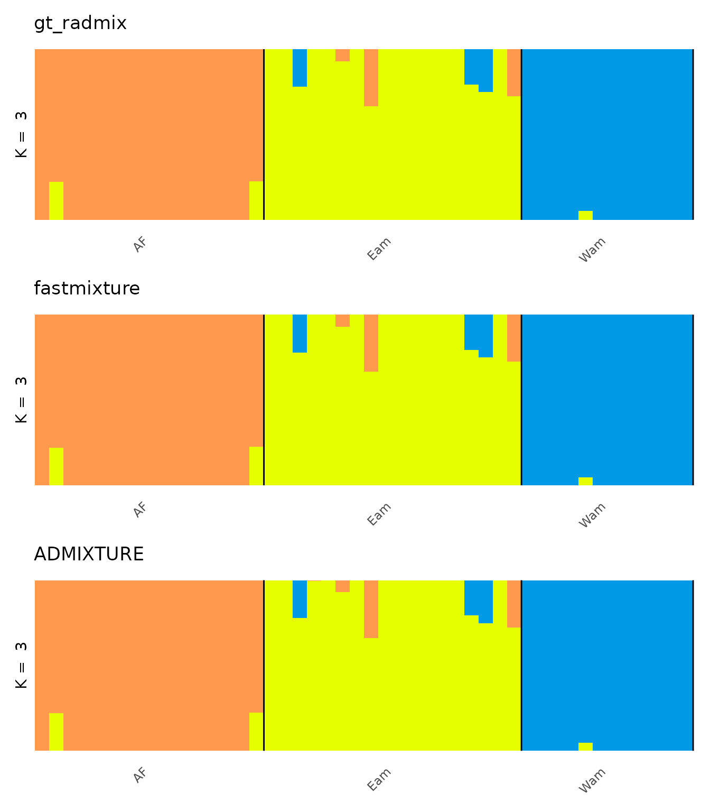

admixture_fastmixture.Rmdtidygenclust estimates ancestry with the ADMIXTURE model
natively, with gt_radmix(). It also provides interfaces to
two external programs that fit the same model: the original ADMIXTURE
program (Alexander et al. 2009), run with
tidypopgen::gt_admixture(), and the python package
fastmixture (Santander et al. 2024), run with
gt_fastmixture(). These programs are optional: they are not
needed by the rest of tidygenclust.
In this article, we show how to install the two programs and how to
run them, alongside gt_radmix(), on the dataset of the
lizard Anolis punctatus (Prates et al. 2018) used in the main
vignette, and we check that the three programs give consistent ancestry
proportions. For a comparison of their performance, see the article
“Benchmarking gt_radmix() against ADMIXTURE and fastmixture”.
gt_radmix() estimates individual ancestry proportions
(Q) and ancestral allele frequencies (P) with the method of ADMIXTURE,
using a modified version of the algorithm of OpenADMIXTURE (Ko et
al. 2023). Much of its C++ code is ported from the Julia implementation
of OpenADMIXTURE, OpenADMIXTURE.jl, so no Julia or Python is needed. It
differs from OpenADMIXTURE, hence its different name: it does not
include the selection of ancestry informative markers; we implemented
the cross-validation of ADMIXTURE, to choose K, which is not part of
OpenADMIXTURE; it supports pseudohaploid data; and it changes some
details of the computations (see ?gt_radmix). If you use
it, please cite Ko et al. (2023) for the algorithm, as well as Alexander
et al. (2009) for the method. If you use fastmixture, cite Santander et
al. (2024), and if you use ADMIXTURE, Alexander et al. (2009).
We use reticulate to install the two programs in a conda
environment (ctidygenclust; on macOS, ADMIXTURE is
installed in an environment of its own, cadmixture86), so
you, as a user, should not need to worry about the details of the python
packages or their dependencies. This works on Linux and macOS, but NOT
on Windows (where you can use the WSL). You can install both programs
with:
library(tidygenclust)
tgc_tools_install()or choose which programs to install, e.g. only
fastmixture:
tgc_tools_install(tools = "fastmixture")Programs can be added later to an existing environment with
tgc_fastmixture_install() and
tgc_admixture_install():
If you want to install fastmixture, you need
llvm installed via brew in the first place. In
bash, you will need:
tgc_tools_version() reports which programs are installed
(NA for those that are not):
library(tidypopgen)
#> Loading required package: dplyr
#>
#> Attaching package: 'dplyr'
#> The following objects are masked from 'package:stats':
#>
#> filter, lag
#> The following objects are masked from 'package:base':
#>
#> intersect, setdiff, setequal, union
#> Loading required package: tibble
library(tidygenclust)
tools_version <- tgc_tools_version()
tools_version
#> $fastmixture
#> [1] "v1.3.0"
#>
#> $admixture
#> [1] "1.3.0"The code that runs each program in this article is only run if that program is available, and the comparison only if both are:
We read the vcf file of the 46 lizards into a
gen_tibble, add the population information, and group the
individuals by the three genetic groups found by Prates et al. (2018):
Eastern Amazonia (Eam), Western Amazonia (Wam) and the Atlantic Forest
(AF):
vcf_path <- system.file(
"/extdata/anolis/punctatus_t70_s10_n46_filtered.recode.vcf.gz",
package = "tidypopgen"
)
anole_gt <- gen_tibble(vcf_path,
quiet = TRUE, backingfile = tempfile("anolis_"),
parser = "cpp"
)
pops_path <- system.file("/extdata/anolis/punctatus_n46_meta.csv",
package = "tidypopgen"
)
pops <- utils::read.csv(pops_path)
anole_gt <- anole_gt %>%
left_join(pops, by = "id") %>%
group_by(pop)
anole_gt
#> # A gen_tibble: 3249 loci
#> # A tibble: 46 × 6
#> # Groups: pop [3]
#> id genotypes population longitude latitude pop
#> <chr> <vctr_SNP> <chr> <dbl> <dbl> <chr>
#> 1 punc_BM288 [0,0,...] Amazonian_Forest -51.8 -3.32 Eam
#> 2 punc_GN71 [2,0,...] Amazonian_Forest -54.6 -9.73 Eam
#> 3 punc_H1907 [0,2,...] Amazonian_Forest -64.8 -9.45 Wam
#> 4 punc_H1911 [0,2,...] Amazonian_Forest -64.8 -9.44 Wam
#> 5 punc_H2546 [0,1,...] Amazonian_Forest -65.4 -9.60 Wam
#> 6 punc_IBSPCRIB0361 [0,0,...] Atlantic_Forest -46.0 -23.8 AF
#> 7 punc_ICST764 [0,0,...] Atlantic_Forest -36.3 -9.81 AF
#> 8 punc_JFT459 [0,0,...] Atlantic_Forest -40.5 -20.3 AF
#> 9 punc_JFT773 [0,0,...] Atlantic_Forest -40.5 -20.0 AF
#> 10 punc_LG1299 [0,0,...] Atlantic_Forest -39.1 -15.3 AF
#> # ℹ 36 more rowsFor each program, we make a single run for K = 3.
anole_radmix <- gt_radmix(anole_gt, k = 3, seed = 1)
summary(anole_radmix)
#> Admixture results for k = 3
#> with slots:
#> $Q for Q matrices
#> $P for matrices
#> $log for logs from the algorithmThe results are stored in a gt_admix object, so we can
use all the methods from tidypopgen (see the main
vignette).
gt_fastmixture() runs fastmixture on a
gen_tibble (reading its backing file directly) or on a set
of PLINK files. Its arguments follow those of fastmixture, so some
differ from those of gt_radmix(): the number of cores is
set with threads, and cross-validation with
cv, the number of folds. By default, it only returns the Q
matrices (set no_freqs = FALSE to also keep the P
matrices). As the fastmixture program does, it starts from a randomised
SVD of the genotypes, which needs all the loci to be polymorphic
(random_init = TRUE starts from random values instead, but
can take much longer to converge). fastmixture prints its progress,
which we hide here:
anole_fm <- gt_fastmixture(anole_gt, k = 3, seed = 1)
summary(anole_fm)
#> Admixture results for k = 3
#> with slots:
#> $Q for Q matricestidypopgen::gt_admixture() runs the original ADMIXTURE
program: it writes the gen_tibble to PLINK files, runs
ADMIXTURE on them, and reads its results back into a
gt_admix object, with the log-likelihood and the log of
each run. With conda_env = "auto" (the default), it uses
the ADMIXTURE installed by tgc_tools_install():
anole_adm <- gt_admixture(anole_gt, k = 3, seed = 1)
summary(anole_adm)
#> Admixture results for k = 3
#> with slots:
#> $Q for Q matrices
#> $P for matrices
#> $log for logs from the algorithmAll three programs return gt_admix objects, which can be
plotted with autoplot(). The labels of the clusters are
arbitrary, so we first match the clusters of gt_radmix()
and fastmixture to those of ADMIXTURE, so that each cluster has the same
colour in all the plots:
# all permutations of 1:n
permutations <- function(n) {
if (n == 1) {
return(matrix(1))
}
sub <- permutations(n - 1)
do.call(rbind, lapply(seq_len(n), function(i) {
cbind(i, matrix(setdiff(seq_len(n), i)[sub], nrow = nrow(sub)))
}))
}
# reorder the clusters of a gt_admix object with a single run, to best
# match those of the Q matrix q_ref
match_clusters <- function(adm, q_ref) {
q <- unclass(adm$Q[[1]])
perms <- permutations(ncol(q))
diffs <- apply(perms, 1, function(x) sum(abs(q[, x] - q_ref)))
best <- perms[which.min(diffs), ]
adm$Q[[1]] <- q_matrix(q[, best])
if (!is.null(adm$P)) {
adm$P[[1]] <- adm$P[[1]][, best]
}
adm
}
q_adm <- unclass(anole_adm$Q[[1]])
anole_radmix <- match_clusters(anole_radmix, q_adm)
anole_fm <- match_clusters(anole_fm, q_adm)
library(ggplot2)
plots <- list(
autoplot(anole_radmix, type = "barplot", k = 3, run = 1,
annotate_group = TRUE
) +
ggtitle("gt_radmix"),
autoplot(anole_fm, type = "barplot", k = 3, run = 1,
annotate_group = TRUE
) +
ggtitle("fastmixture"),
autoplot(anole_adm, type = "barplot", k = 3, run = 1,
annotate_group = TRUE
) +
ggtitle("ADMIXTURE")
)
patchwork::wrap_plots(plots, ncol = 1)
The three plots look the same. To confirm it, we compare the ancestry proportions of each individual with those estimated by ADMIXTURE:
q_differences <- function(adm) {
q <- unclass(adm$Q[[1]])
c(
max_abs_difference = max(abs(q - q_adm)),
correlation = stats::cor(as.vector(q), as.vector(q_adm))
)
}
rbind(
gt_radmix = q_differences(anole_radmix),
fastmixture = q_differences(anole_fm)
)
#> max_abs_difference correlation
#> gt_radmix 0.004659000 0.9999983
#> fastmixture 0.005003754 0.9999981To choose K, all three programs can compute a cross-validation error
for each run, with crossval = TRUE in
gt_radmix() and gt_admixture(), and with
cv (the number of folds) in
gt_fastmixture():
gt_radmix(anole_gt, k = 2:4, n_runs = 3, crossval = TRUE)
gt_admixture(anole_gt, k = 2:4, n_runs = 3, crossval = TRUE)
gt_fastmixture(anole_gt, k = 2:4, n_runs = 3, cv = 5)gt_radmix() implements the procedure of ADMIXTURE, which
hides random genotypes, whereas fastmixture hides whole individuals: its
errors are on a different scale, and only the value of K that they
favour can be compared with those of the other two programs.
Alexander DH, Novembre J, Lange K (2009) Fast model-based estimation of ancestry in unrelated individuals. Genome Research, 19(9), 1655-1664.
Ko S, Chu BB, Peterson D, Okenwa C, Papp JC, Alexander DH, Sobel EM, Zhou H, Lange KL (2023) Unsupervised discovery of ancestry informative markers and genetic admixture proportions in biobank-scale datasets. The American Journal of Human Genetics, 110(2), 314-325.
Prates I, Penna A, Rodrigues MT, Carnaval AC (2018) Local adaptation in mainland anole lizards: Integrating population history and genome-environment associations. Ecology and Evolution, 8(23), 11932-11944.
Santander CG, Refoyo Martinez A, Meisner J (2024) Faster model-based estimation of ancestry proportions. Peer Community Journal, 4: e115. https://doi.org/10.24072/pcjournal.503